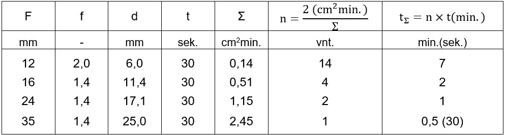
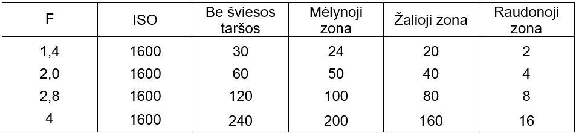
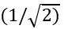
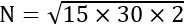

3. Teorija ir technika
3.1. Apie ISO
ISO yra santykinis jutiklio signalo stiprinimo koeficientas, nuo kurio priklauso dinaminis diapazonas (dinaminis diapazonas - santykis tarp tamsiausių ir šviesiausių vaizdo tonų). Kuo didesnis ISO, tuo mažesnis užfiksuojamas dinaminis diapazonas.Astrofotografijai optimalus ISO dydis yra mažiausias dydis, viršijantis fotoaparato elektronikos triukšmus: Nikon, Sony, Fuji - ISO800÷1600, Canon - ISO1600÷3200.
ISO nevei̇̃kia nei jautrumo, nei ekspozicijos (žr. 3.2 sk.). Jautrumas priklauso nuo objektyvo optinio pralaidumo ir jutiklio kvantinio efektyvumo QE 1, o ekspozicija - nuo diafragamos 2 ir išlaikymo. Jei kaitaliosite tik ISO dydžius, nekeisdami išlaikymo ir diafragmos, ant jutiklio patenkantis šviesos kiekis nesikeis. Taip, kai jūs didinate ISO, vaizdas šviesėja, tačiau jokios papildomos informacijos (nei daugiau žvaigždžių, nei išryškėjusių silpnesnių ūkų) negaunate.
3.2. Apie ekspoziciją. Objektyvai
Ekspozicija – tai surenkamos šviesos kiekis (fiz. - apšvieta), lygus fotoaparato jutiklio apšviestumo ir apšvietimo trukmės sandaugai.Apšviestumas yra ploto vienetui tenkantis šviesos srautas, tad ekspoziciją galima išreikšti objektyvo diafragmos ploto ir išlaikymo sandauga:
Objektyvo diafragmos plotas:
F - objektyvo židinio nuotolis (mm), f - diafragmos skaičius, d - efektyvusis diafragmos skersmuo, randamas pagal formulę:
Šviesos aspektu, efektyvusis diafragmos skersmuo d yra svarbiausias veiksnys astrofotografijoje. Nepainiokite su f skaičiumi, kuris yra objektyvo židinio nuotolio ir efektyviojo diafragmos skersmens santykis.
Taip, ekspozicija tiesiogiai susijusi su f , tačiau f skaičius tik nurodo šviesos tankį objektyvo židinio plokštumoje, o ne visą priimtą šviesos kiekį Σ. Taigi, mažesnis diafragmos f skaičius ne visada reiškia didesnį šviesos kiekį.
Pavyzdžiui, 12 mm f/2 objektyvo efektyvusis diafragmos skersmuo d = 12/2 = 6 mm (jei dar nežinojote, tai prie tamsos pripratusio žmogaus akis prilygsta d = 7 mm). Tuo tarpu 50 mm f/2.8 objektyvo d = 50/2.8 = 17,86 mm, tai reiškia, kad per jį patenka beveik 3 kartus (17,86/6) daugiau šviesos, nei per 12 mm f/2 objektyvą. Aišku, pakeitus f , d taip pat keičiasi (pvz., 12 mm f/4, d = 12/4 = 3 mm).

Astrofotografijai reikia „šviesių“ objektyvų - su kiek galima mažesniu f konkrečiam židinio nuotoliui, kuo didesniais d, S (astronomai seniai tą žino ir konstruoja teleskopus kuo didesnius). Kuo didesnis efektyvusis objektyvo diafragmos skersmuo, tuo daugiau ir silpnesnių žvaigždžių bus užfiksuojama, nepriklausomai nuo f/ santykio.
Tarkime, 30 sek. išlaikymas yra atskaitos taškas, tuomet geriausių objektyvų Σ yra apie 1 cm2min. ir daugiau (žr. 1 lent. 3.3 sk.). Žinoma, galite padaryti puikių nakties dangaus fotografijų ir tamsesniais objektyvais, tačiau kuo Σ mažiau už 1, tuo sunkiau pasiekti kokybišką vaizdą.
Astropeizažams rekomenduojami objektyvai 24 mm f/1.4, 21 mm f/1.4, 16 mm f/1.4 arba galite fotografuoti standartiniais 35 mm f/1.4, 50 mm f/1.4 objektyvais ir jungti nuotraukas į panoramas (ilgesniu židiniu gaunamas netgi detalesnis, švaresnis vaizdas).
Tolimojo kosmoso objektams tinka teleobjektyvai nuo 200 mm f/2.8 ir ilgesnio židinio.3.3. Apie ekspoziciją. Išlaikymas
Kad nuotraukose būtų užfiksuotos gražios, dar apvalios žvaigždės, reikalingi pakankamai trumpi išlaikymai. Šiuo atveju ekspozicijų trukmė priklauso nuo objektyvo židinio nuotolio, objekto vietos dangaus sferoje ir, jei dar nežinojote, priklauso nuo pikselių dydžio, tačiau neturi nieko bendra su jutiklio dydžiu (apkirpimo faktoriumi - žr. 3.7 sk.).Žemė pilnai 360° apsisuka per 23 val. ir 56 min., tai yra 0,00418 laipsniai per sekundę (360° / 86160 sek.). Žvaigždės ant jutiklio paliekamo „pėdsako“ ilgis:
Pvz., ekvatoriuje (δ = 0°) su 12 mm objektyvu ir 15 sek. išlaikymu:
Jei dar nežinojote, tai populiari 500 taisyklė skaitmeninei fotografijai netinka. Šis analoginės fotografijos laikų principas nūnai nebeteisingas dėl daug aukštesnės dabartinių jutiklių skiriamosios gebos, lyginant su juostele. Apskritai, kokia prasmė taikyti „šimtų“ taisykles (ypač su plačiakampiais objektyvais), kai į kadrą patenka skirtingų deklinacijų šviesuliai?
Kita vertus, šiai dienai reliatyviai teisinga būtų 200 taisyklė:
Maksimalų išlaikymą toliau nuo dangaus pusiaujo galima apskaičiuoti pagal formulę:
Nustatydami tinkamą išlaikymą, remkitės 200 taisykle ir 1 lent. skaičiavimo principu
1 lentelė. Įvairių objektyvų Σ 
F – objektyvo židinio nuotolis, f – diafragmos skaičius, d – objektyvo optinės angos diametras, t – išlaikymas, Σ - ekspozicija, n – 30 sek. subekspozicijų kiekis, reikalingas pasiekti Σ = 2 cm2min. ekvivalentą, tΣ – bendras ekspozicijų laikas.
Reikiama ekspozicija (sąlyginis ilgos ekspozicijos ekvivalentas) pasiekiama programiškai sujungiant subekspozicijas (santykinai trumpų išlaikymų kadrus).
Pavyzdžiui, kad prie ekvatoriaus 24 mm objektyvu gauti 30 sek. trukmės ekspozicijos vertę, reikės sujungti 3 kadrus po 10 sek. (tE = 200/24 = 8,3 sek. ≈ 10 sek.). O dar geriau būtų 6 subkadrai po 10 sek. (1 lent. tΣ = 1 min.).
Su dar trumpesnio židinio, pvz., 12 mm f/2, objektyvu užfiksuoti kažką panašaus, kaip per 30 sek. su 35 mm f/1.4 objektyvu, reikalinga tΣ = 7 min. ekspozicija (žr. 1 lent.). tE = 200/12 = 16,7 sek. (~ 15 sek.), reiškia reikės 7 x 60/15 = 28 kadrų po 15 sek.
Tačiau net geriausi plataus kampo objektyvai sferinį (dangaus) vaizdą ant plokštumos (jutiklio) iškreipia. Žemei sukantis ir keičiantis žvaigždžių padėčiai, keičiasi ir plačiakampio projekciniai iškraipymai, dėl ko tampa nebeįmanoma sutapdinti žvaigždes atskiruose kadruose. Nebandykite sulygiuoti plataus kampo objektyvu darytų kadrų, jei bendras ekspozicijų laikas tΣ ilgesnis nei 1 min. (taisyklė negalioja, jei naudojate dangaus sekimo montuotę).
Kad minimalizuoti skaitymo triukšmą, ekspozicijos trukmė turi būti tokia, kad nuotraukos histogramos 4 pikas eitų per 1/4 - 1/3 nuo kairiojo grafiko krašto. Principas galioja po 2013 m. pagamintiems fotoaparatams, kai ISO~1600. Patiems naujausiems ir ateities modeliams histogramos pikas galės būti ties 1/5-1/6.
Bet kokiu atveju, ekspozicija turi trukti tiek ilgai, kiek pakanka 1/4 - 1/3 histogramai pasiekti, bet ne ilgiau. Tai galioja ir subekspozicijoms - kai tik subekspozicijos laikas pasiekia histogramos 1/4 - 1/3 lygį, dar ilgesnis išlaikymas nebetenka prasmės - tokiu atveju pasidaro svarbiau bendras ekspozicijų laikas (tΣ).
Svarbus faktorius - delsà tarp subekspozicijų. Reikia duoti laiko veidrodžio fiksavimui, duomenų įrašymui į kortelę ir leisti atvėsti jutikliui, kad įšylanti elektronika nedidintų triukšmų sekančiuose kadruose. Darykite bent pusės nustatyto išlaikymo trukmės pauzes tarp subkadrų, pvz., išlaikymas 30 sek. - pauzė 15 sek. (30 sek. dar geriau). https://www.cloudynights.com/topic/83252-noise-experiment-rest-interval-between-exposures/
Išlaikymą dar gali riboti dangaus švytėjimas (šviesos tarša ir dangaus natūralus spinduliavimas). Ir čia reikia stengtis, kad ekspozicijos histogramos pikas bent jau nesiektų vidurio (1/4 - 1/3 būtų idealu).
2 lentelė. Orientaciniai vienos ekspozicijos laikai, priklausomai nuo šviesos taršos (sek.) 
Apytikslį kadrų kiekį tam tikrai šviesotaršai apskaičiuosite visą ekspozicijos laiką tΣ (1 lent.) padalinę iš vienos ekspozicijos laiko (2 lent.).
Pavyzdžiui, su objektyvu 24 mm f/1.4 mieste (raudonoji zona šviesotaršos žemėlapiuose) reikėtų 30 kadrų po 2 sek. (1 min. / 2 sek. = 60 / 2 = 30).
Nenaudokite ETTR 5! Net su 1/4 histograma ryškiausios žvaigždės jau yra „kerpamos“, ir jeigu jūs histogramos piką paslinksite dar dešiniau, dar daugiau žvaigždžių bus „išdeginta“.
3.4. Atvaizdo mastelis
Tai yra objekto tikrojo dydžio mato santykis su ilgio vienetu ant fotoaparato jutiklio. Atvaizdo mastelis apskaičiuojamas pagal formulę:1 radianas = 206265 arcsek.
Pikselio žingsnis:
pikselio žingsnis: p = 23,6 / 4962 = 0,00476 mm (= 4,76 µm).
Žinant atstumą iki objekto, atvaizdo mastelį galima išreikšti tiesiniu dydžiu:
Objekto dydis:
Pavyzdys. Objekto projekcija ant jutiklio užima 300 pikselių, pikselio žingsnis 5 µm (0,005 mm), atstumas 50 m, objektyvo židinio nuotolis 500 mm, koks objekto tikrasis dydis? Skaičiuojam: H = 300 x 0,005 x 50 / 500 = 0,15 m.
Objekto kampinis dydis:
M = (206265×0,00476) / 400 = 2,45 arcsek./px , h = θ / M = 1800/ 2,45=734,7 - tiek pikselių Mėnulio atvaizdas užims ant X-A1 jutiklio.
Atstumas iki objekto:
Teleobjektyvams tinka supaprastintos atstumo skaičiavimo formulės:
Pavyzdys. Fujifilm X-A1 su 400 mm objektyvu, reikia apskaičiuoti, kokiu atstumu turi būti 2 m dydžio objektas, kad ant jutiklio užimtų 2000 px. Iš skaičiavimų aukščiau, p = 0,00476 mm, M = 2,45 arcsek./px, skaičiuojam atstumą:
Atvaizdo mastelis taip pat apibrėžia nuotraukos raišką, ir čia reikėtų atkreipti dėmesį į mastelį skirtingiems naktinio dangaus objektams.
Giliojo kosmoso objektams (su teleobjektyvais) rekomenduojamas atvaizdo mastelis [7] yra apie 2 - 4 arcsek./px. Maždaug nuo 2 arcsek. atmosferos oras ima riboti ilgų ekspozicijų raišką ir virš 500 mm objektyvų naudojimas tampa mažai tikslingas.
Naktiniams peizažams (Paukščių Takui) plačiakampiais objektyvais atvaizdo mastelis gali būti dešimtys arcsek./px.
3.5. Tamsioji srovė
Tamsioji srovė - nedidelė elektros srovė, tekanti jutikliu dar nesant fotonų absorbcijos (galima sakyti, tuščios eigos srovė). Tai pagrindinis ilgų ekspozicijų ir astrofotografijų skaitmeninio triukšmo šaltinis.Tamsioji srovė labai priklauso nuo aplinkos temperatūros - kylant temperatūrai didėja dvigubai maždaug kas 5 C°, ir atvirkščiai. Jutiklių temperatūra veikimo metu būna apie 10 °C aukštesnė už aplinkos. Jutiklis daugiau šyla, jei naudojamas elektroninis ieškiklis, o išjungus jį, atvėsimas iki aplinkos temperatūros gali užtrukti iki 30 min. Didelių ir masyvių pro klasės aparatų jutikliai ir procesoriai kaista labiau ir vėsta lėčiau, nei mažesniųjų.
Tamsiajai srovei sumažėjus du kartus, triukšmas mažėja 0,707 karto . Bendras sujungtų nuotraukų triukšmas lygus visõs ekspozicijos trukmės tamsiųjų srovių kvadratinei šakniai ir nepriklauso nuo subekspozicijų trukmės.
Pavyzdžiui, 15 x 30 sek. su jutikliu, kurio tamsioji srovė yra 2 elektronai/sek., sujungtame vaizde bendras triukšmas:  = 30 elektronų. Kaip taisyklė, mažiausias tamsiąsias sroves turi naujausi fotoaparatų modeliai.
Daugumos po 2014 m. pagamintų jutiklių tamsioji srovė 20 °C temperatūroje yra 1-3 elektronai/sek. Gali būti, kad netolimoje ateityje visas elektronikos triukšmas bus mažiau nei 1 elektronas/sek.
3.6. Ar svarbu jutiklio dydis?
Ir taip, ir ne. Esmė tame, kad didesniuose formatuose dažniausiai naudojami didesni objektyvai, kurie praleidžia daugiau šviesos. APS-C 6 galima pasiekti lygiavertį rezultatą, kaip su FF 7, jei tik mažesniąjam formatui įmanoma išlaikyti tokį pat diafragmos efektyvųjį skersmenį. Įvairūs šaltiniai, komentuojantys FF pranašumą, paprastai nutyli, kad testai buvo atlikti skirtingo šviesumo objektyvais (nors naudotas tas pats f/).Svarbu tik, kad pikseliai nebūtų mažesni nei 4 µm (pikselių dydį riboja fizikos dėsniai). Mažesni pikseliai greičiau prisisotina, tačiau tai ne problema mažo apšviestumo sąlygomis. Kai išlaikymai ilgi, mažesni pikseliai netgi turi sąlyginių pranašumų - mažesnius triukšmus (mažesnės tamsiosios srovės) ir detalesnį vaizdą (mažesnis pikselių žingsnis).
Nuo pikselių dydžio priklauso dinaminis diapazonas – pradžioje jis beveik toks pat, tačiau mažesniųjų pikselių diapazonas sparčiau siaurėja, didinant ISO.
3.7. Apkirpimo faktorius
Apkirpimo faktorius (angl. - crop factor) nurodo skaitmeninio jutiklio dydį, lyginant su klasikinės 35 mm (36 x 24 mm) juostelės kadru.Pavyzdžiui, 24 mm objektyvo su viso kadro jutikliu matymo kampas bus toks pat, kaip 16 mm objektyvo su 1,5 karto mažesniu (APS-C) jutikliu.
Jei dar nežinojote, tai apkirpimo faktorius nereiškia didesnio optinio priartinimo ir neteisingai vadinamas židinio nuotolio daugikliu.
Nors „šimtų“ taisyklės iš esmės neteisingos, atskirais atvejais gali pasirodyti, kad jose apkirpimo faktorius taikomas pagrįstai. Taip nutinka, kai jutiklių pikselių dydžių santykis atsitiktinai atitinka apkirpimo faktorių. Pvz., FF Nikon D5 (p = 6,4 µm) ir APS-C Nikon D7500 (p = 4,2 µm) pikselių santykis yra lygus apkirpimo faktoriui (6,4 / 4,2 = 1,52).
Tačiau skirtingi formatai gali turėti panašaus (ar net tokio pat) dydžio pikselius. Pavyzdžiui, Canon 5Ds (FF) ir Canon 7D Mark II (APS-C) - abiejų jutiklių p = 4,1 µm, reiškia jų žvaigždžių statiškumo laikai vienodi ir apkirpimo faktorius jų neįtakoja [4].
3.8. Apie nakties dangaus spalvas
„Jeigu jūsų saulėlydžio nuotrauka mėlyna, iš karto aišku, kad kažkas blogai su fotoaparatu ar redagavimu, arba jūs pirmas žmogus, pabuvojęs Marse.“ (TWAN 8 įkūrėjas Babak A. Tafreshi)Nors net kai kurie profesionalūs fotografai stengiasi padaryti naktinį dangų mėlynu, bet iš tikrųjų, jei dar nežinojote, tai tamsus ir be mėnesienos dangus nėra mėlynas.
M ė l y n a s dangus būna kai yra mėnesiena arba sutemos saulei nusileidus.
Mūsų akys evoliucionavo Saulės šviesoje, todėl baltą spalvą tamsoje suvokiame taip pat, kaip dienos šviesoje. Kad gautųsi natūralios nakties dangaus spalvos, jūsų fotoaparate turi būti nustatytas dienos šviesos baltos spalvos balansas.
Paveikslėlio viršuje matote žvaigždžių spalvas pagal jų temperatūrų skalę (tokią naudoja astronomai) nuo O - karščiausių, iki M - „šalčiausių“. Kalibravimo lentelėje spalvos atrodo „neteisingos" todėl, kad 90 % žvaigždžių nakties danguje yra oranžinės (M ir K), o mūsų „dienos šviesa“ Saulė yra geltona (G).
Žinomų dangaus objektų spalvos turi atitikti jų temperatūros diapazoną (pvz., raudonoji supermilžinė Antaris neturėtų būti mėlyna).
Įvairių šviesulių spalvas galima pasitikrinti Stellarium programa (Nustatymų langas [F2] – Informacija – Papildoma informacija):
spragtelėjus ant žvaigždės, tarp visų jos duomenų parodomas ir taip vadinamas spalvos rodiklis B-V. Pagal jį 3 lent. rasite žvaigždės spalvą (jei dar nežinojote, mūsų Saulės B-V = 0,656).
3.9. Technologijos apibendrinimas
Raktas į astrofotografiją - objektyvai. Svarbesnis faktorius yra diafragmos efektyvusis skersmuo, ne jutiklio dydis. Didesnio formato kamera nepagerins nuotraukų kokybės be didesnės diafragmos objektyvo. Kažin, ar FF su 24-70 mm f/4 objektyvu bus geriau už APS-C su 16-55 mm f/2.8.Optimali astrofotografijos sistema turėtų turėti labai šviesius objektyvus ir apie 4-5 µm (tik ne mažesnių) pikselių jutiklį.
Šviesiausi (21-24 mm f/1.4, 35-50 mm f/1.4-f/2, 200 mm f/2-f/2.8, 300-400 mm f/2.8, 500 mm f/4) objektyvai renka daug kartų daugiau šviesos ir su jais gaunamos švaresnės (mažiau triukšmingos) nuotraukos.
Dar švaresnės, detalesnės ir įtaigesnės būtų iš 35-50 mm f/1.4-f/2 objektyvais darytų atskirų kadrų į vieną didelę panoramą sujungtos nuotraukos (mozaikos).
Ultra plačiakampiai objektyvai, tokie kaip 12 mm f/2, gali būti naudojami naktinio dangaus fotografijai, tačiau dėl mažo šviesos pralaidumo gaunamos triukšmingesnės nuotraukos. Šis triukšmas net painiojamas su žvaigždėmis, žmonės stebisi, kodėl jų nuotraukose tiek daug žvaigždžių. Kai mažiau triukšmų, geriau matomos silpnesnės žvaigždės, Paukščių Tako ir kosminių ūkų kontūrai.
Naudokite sekimo prietaisus Žemės sukimosi kompensavimui.
Naudokite greitas ir kokybiškas atminties korteles.
Fotografuokite dienos šviesos baltos spalvos balansu.
Kuo mažiau naudokite elektroninį ieškiklį.
Darykite pakankamas pauzes tarp subekspozicijų.
Naujausi fotoaparatų modeliai turi mažiau triukšmingus jutiklius (visų gamintojų).
Jei nesate tikri dėl ISO, padarykite bandomuosius kadrus su ISO800, ISO1600, ISO3200 ir pasirinkite mažiausią ISO, kuriam esant fono triukšmas mažiausias.
1 QE - viso fotonų srauto ir įrašytų fotonų santykis. Paprastų jutiklių QE = 30 - 40 %, CCD - nuo 40 iki 90 % (palyginimui, žmogaus akies QE = 1 - 5 %).
2 Diafragma - keičiamo dydžio objektyvo anga, reguliuojanti praleidžiamą šviesos pluoštą.
3 Deklinacija - šviesulio kampinis nuotolis nuo dangaus ekvatoriaus (rodo Stellarium programa).
4 Histograma - nuotraukos šviesumų pasiskirstymo stulpelinė logaritminė diagrama..
5 ETTR (angl.- Exposure to the right) - metodika, kai ekspozicija daroma kuo dešiniau histogramos.
6 APSC (angl. - Advanced Photo System type C) - juostinio APS formato jutiklis (23 x 15 mm).
7 FF (angl. - Full Frame) - viso kadro, juostinio 35 mm formato jutiklis (36 x 24 mm).
8 TWAN (angl. - The World At Night) - tarptautinė astrofotografijos organizacija „Pasaulis naktį“.
9 Zodiako šviesa - silpnas dangaus švytėjimas naktį zodiako juostos srityse, matomas vakaruose Saulei nusileidus ir rytuose prieš jai patekant. Susidaro Saulės šviesai sklindant pro įvairias dulkes kosmose.